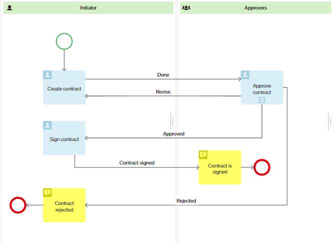
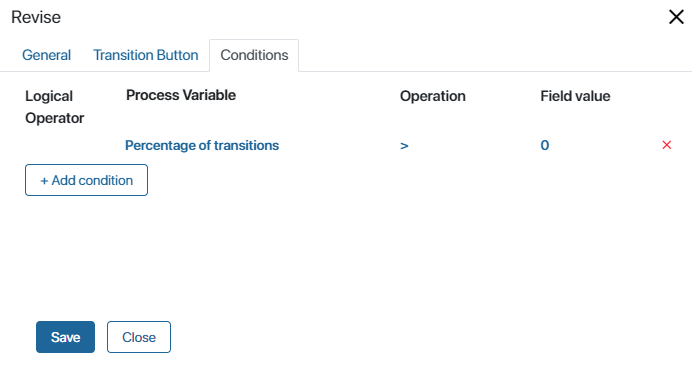
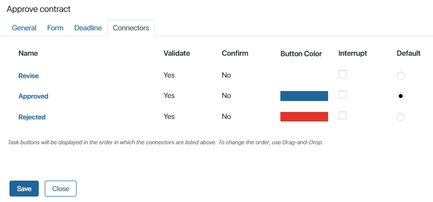
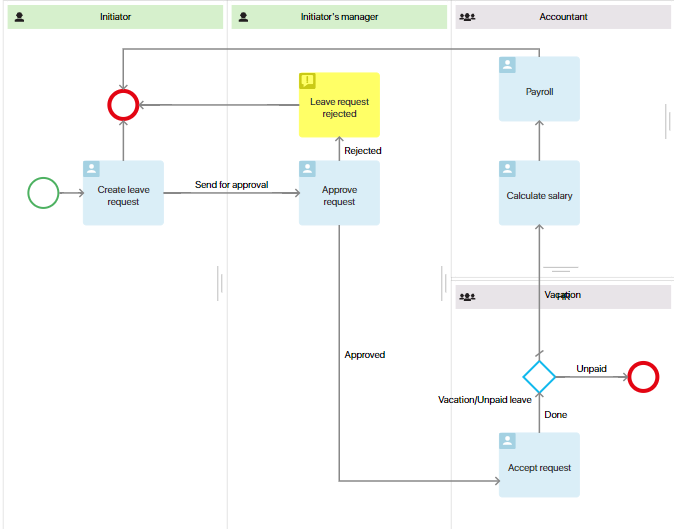
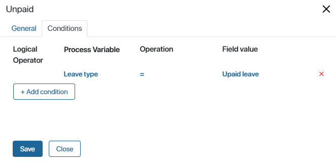
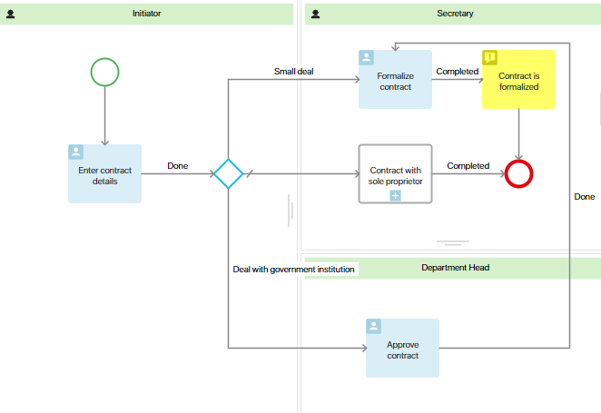
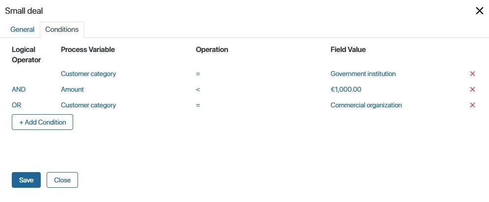
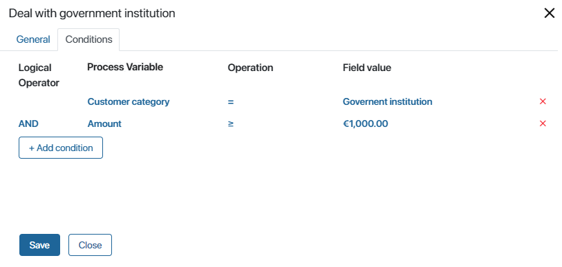

Connector going from a task with multiple executors
Consider a contract approval process.

It comprises the following stages:
- The initiator prepares the contract, selects the approvers, and sends them the document for review.
- After the approvers review the contract, they can reject it, send it for revision, or approve it.
- If the contract is rejected, the process ends.
- If the contract is sent for revision, the initiator will receive a task to make amendments. Then the contract will be sent back for another round of approval.
- If the contract is approved, the initiator organizes a meeting with the client, and both parties sign the contract.
When modeling the process, you need to account for situations when someone approves the contract, someone asks for revisions, and someone else rejects it. The process development will be determined by the connector settings. To set up the process flow, perform the following actions:
- For the task Approve contract, choose the option for sequential multiple instance task. The approvers will complete the task one after another. The process will move to the next step after all employees make their decisions.
- Set up the Reject connector and add a verification condition. If one of the approvers believes the contract should not be signed and chooses the option Reject, there’s no need for the other executors to review the document. This condition will be checked every time an executor completes the task. Set Percentage of transitions > 0. As soon as someone chooses Reject, the task will be canceled for all other approvers, and the process will end.

- Similarly, set up the Revise connector. If at least one of the approvers believes that the contract should be revised, the initiator will be assigned the task to make revisions.
 - Open the settings for the Approve contract task. For the Approve connector, select the Default option. This means if no one chooses the options Reject or Revise, the process will follow the Approve path.
 - If you enable the Interrupt option, when one user chooses this connector, the task will be canceled for other employees, and the process will move to the next step.
In our example, this flow is set in the connectors’ settings using the condition Percentage of transitions > 0. For the Approve transition itself, there's no need to set additional conditions. - Save and publish the configured process.
Setting up a connector with one condition from a gateway
Consider the approval process for leave request.

It consists of the following steps:
- The initiator fills out an application, specifying the type of leave.
- The initiator’s manager reviews the application. In case of a negative decision, the process ends. In the case of a positive one, the request goes to the HR.
- Then the process can follow two paths:
- If it’s a unpaid time off, the process ends.
- If it’s a paid leave, the accountant calculates the leave amount, and then, within the specified time, issues the money to the initiator.
To ensure that after the Vacation/Unpaid leave gateway, the process develops along a particular path, you need to set a condition for the connector. When the HR manager completes the Accept request task, the condition check occurs. After that, the corresponding action will be executed: the process ends or the accountant is assigned a task.
- Open the settings for the Unpaid leave connector and add the condition Leave type = Unpaid leave. Since only one condition should be met, there’s no need to use an operator.
 - Double-click on the gateway and in its settings, indicate the default connector. In our example, it’s Vacation. If the condition is not met, the process will develop along the default connector.
- Save and publish the configured process.
Setting up a connector with multiple conditions from a gateway
Let’s set up a process for formalizing a contract with a customer.

The process involves the following steps:
- The initiator fills out the contract details. On the task form, they indicate the contract amount and the customer category: government institution, commercial organization, or sole proprietor.
- Depending on the provided data, the process can branch into three paths:
- If a small deal is being made with a government institution or the order came from a commercial company, the secretary can immediately formalize the contract.
- If the deal is with a government institution involving a large sum, the department head must first approve the contract. Afterward, the secretary will formalize it.
- If the client is a sole proprietor, a separate subprocess for formalizing contracts with such customer category will be launched. Once the subprocess concludes, the main contract processing process will also end.
- After the contract is formalized, the secretary receives a notification, and the process concludes.
Let’s configure the gateway transitions so that during the process, the customer category and the contract amount are checked. Depending on these data, different process branches will be selected.
If the customer category is a government institution and the contract amount with them is less than 1000 euro, or if the client is a commercial company, the secretary will get the task Formalize contract.
- Double-click on the transition to the Formalize contract task. Under the General tab, specify the connector’s name.
- To ensure the process follows this branch, set up verification conditions under the Conditions tab. First, verify that the customer is a government institution, and the contract amount with them is less than 1000 euro, using the AND operator.
- Next, add another condition to be checked if previous conditions aren’t met: the customer category is a commercial organization. Combine this condition with the previous ones using the OR conjunction.

Alternatively, instead of the OR conjunction, you can use the OR NOT conjunction and mark the customer as an entrepreneur Then the secretary will execute a contract with any customer other than an entrepreneur.
- Save the settings.
You can also set up the same conditions using the AND NOT conjunction instead of the AND and OR conjunctions. Specify the amount less than 1000 euro, then the AND NOT conjunction and the Customer category process variable, which is entrepreneur. This way the process will go straight to the task of contract execution, since the amount is less than 1000 euro and the customer is not an entrepreneur.
If the customer is a government institution and the contract amount with them is equal to or greater than 1000 euro, the process will move to the Approve contract task in the swimlane of the supervisor.
- Double-click the connector to the Approve contract task. Under the General tab, specify the connector’s name.
- Under the Conditions tab, set the verification conditions for the customer category and the contract amount, which should be equal to or greater than 1000 euro. Combine conditions using the AND operator.
 - Save the settings.
- Double-click the connector on the diagram and choose the default connector. In our example, this is the launch of the subprocess for formalizing a contract with a sole proprietor. If none of the conditions in the transitions are met, it means the deal is being made with that customer category for which a separate subprocess has been created.
- Save and publish the configured process.
Found a typo? Select it and press Ctrl+Enter to send us feedback